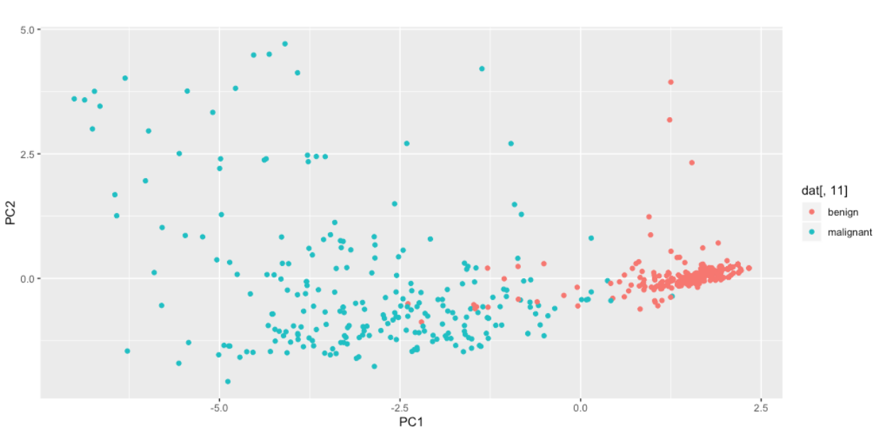

What is PCA?
PCA Stands for Principal Component Analysis, and is a commonly used technique in modeling to reduce dimensionality and better explain the relationships between variables in a dataset. The output of PCA are the principal components, which are linear transformations of the original dataset. The number of principal components will match the number of variables (i.e. columns) in the original dataset and will also have the same number of records (i.e. rows), as the original dataset. However, there is not a 1:1 mapping from original variables to principal components, since each principal component is a linear transformation of the entire data set. The principal components are naturally ordered by the amount of variance they explain in the original data set, from most to least. I.e., the 1st principal component explains the most variance in the dataset and the last principal component explains the least amount of variance. Before looking into how PCA works, let’s demonstrate a quick example using the BreastCancer dataset provided by University of Wisconsin (available in the ‘mlbench’ package in R). The entire R code I wrote is available here (source). Below is a view of the first few columns of the original dataset. Note there is one ID column, 9 independent variables, and one dependent variable (“class”).
The Magic of PCA and Eigenvectors
Below are 3 plots:
- Plot1: Optimally Bad. Low variance when mapped to line (note the spread on the line). High Residuals (distance from the line)
- Plot2: Kind of Bad. Medium Variance. Medium Residuals
- Plot3 (The eigenvector transformation!): Optimally Good. High variance = Low Residuals
It's actually a fact, that when you maximize variance, you minimize orthogonal (perpendicular to the line) residuals. The more variance you can provide, the better explanor of variables. Imagine predicting cars value based on their number of wheels. If they all have 4 wheels (low variance), that would be a very bad predictor. PCA provides linear transformations of datasets that maximize variance and minimize residuals.
Click to expand section
Before looking into how PCA works, let’s demonstrate a quick example using the BreastCancer dataset provided by University of Wisconsin (available in the ‘mlbench’ package in R). The entire R code I wrote is available here. (link) Below is a view of the first few columns of the original dataset. Note there is one ID column, 9 independent variables, and one dependent variable (“class”).
| ID | Cl.thickness | Cell.size | Cell.shape | Marg.adhesion | Epith.c.size | Bare.nuclei | Bl.cromatin | Normal.nucleoli | Mitoses | class |
|---|---|---|---|---|---|---|---|---|---|---|
| 1 | 5 | 1 | 1 | 1 | 2 | 1 | 3 | 1 | 1 | benign |
| 2 | 5 | 4 | 4 | 5 | 7 | 10 | 3 | 2 | 1 | benign |
| 3 | 3 | 1 | 1 | 1 | 2 | 2 | 3 | 1 | 1 | benign |
| 4 | 6 | 8 | 8 | 1 | 3 | 4 | 3 | 7 | 1 | benign |
| 5 | 4 | 1 | 1 | 3 | 2 | 1 | 3 | 1 | 1 | benign |
| 6 | 8 | 10 | 10 | 8 | 7 | 10 | 9 | 7 | 1 | malignant |
View of the first few columns after PCA. Note the 9 principal components to match the 9 independent variables.
| ID | PC.1 | PC.2 | PC.3 | PC.4 | PC.5 | PC.6 | PC.7 | PC.8 | PC.9 |
|---|---|---|---|---|---|---|---|---|---|
| 1 | 1.46909 | -0.1042 | 0.56527 | -0.03194 | 0.15089 | -0.05998 | -0.34915 | 0.42004 | 0.00569 |
| 2 | -1.44099 | -0.56972 | -0.23643 | -0.4778 | -1.64188 | 0.48268 | 1.11508 | 0.3793 | -0.02341 |
| 3 | 1.59131 | -0.07606 | -0.04882 | -0.09232 | 0.0597 | 0.27917 | -0.23257 | 0.20965 | -0.01336 | 4 | -1.47873 | -0.52806 | 0.60261 | 1.40979 | 0.56033 | -0.06298 | 0.21096 | -1.60592 | -0.18264 |
| 5 | 1.34388 | -0.09065 | -0.02998 | -0.33804 | 0.10875 | -0.43105 | -0.25967 | 0.44633 | 0.03879 |
| 6 | -5.01065 | -1.53379 | -0.46067 | 0.29517 | -0.39156 | -0.11527 | -0.38425 | -0.14899 | 0.04295 |
Once again, these are linear transformations of the entire original dataset, and therefore PC1 is not related to the first variable per se. However, the principal components are ordinal and thus PC1 explains the most variance in the entire data set. The variance explained for each principal component is shown below:
| Value | PC.1 | PC.2 | PC.3 | PC.4 | PC.5 | PC.6 | PC.7 | PC.8 | PC.9 |
|---|---|---|---|---|---|---|---|---|---|
| Standard deviation | 2.4289 | 0.8809 | 0.7343 | 0.678 | 0.6167 | 0.5494 | 0.5426 | 0.5106 | 0.2973 |
| Proportion of Variance | 0.6555 | 0.0862 | 0.0599 | 0.0511 | 0.0423 | 0.0335 | 0.0327 | 0.029 | 0.0098 |
| Cumulative Proportion | 0.6555 | 0.7417 | 0.8016 | 0.8527 | 0.895 | 0.9285 | 0.9612 | 0.9902 | 1 |
PC1 explains approximately 65.5% of the variance in the original data. Let’s plot PC1 and PC2 and compare them to the original class of data. From this plot1 you can see how good of a predictor the 1st principal component is (shown along the x-axis). Principal components are new features created by the original dataset and can be excellent descriptions of the original data:

Dimensionality Reduction
- - The dimensionality of a dataset is essentially the number of variables (i.e columns) in a dataset. In table1 above there are 9 independent variables. While, 2-dimensional data sets are relatively easy to visualize (e.g. plot1 above), data sets beyond 2 or 3 dimensions become increasingly difficult to conceptualize. You cannot simply plot a 9-dimensional data set.
- - PCA Dimensionality reduction can have many benefits, including:
- Faster processing time / less storage space
- Helps with overfitting the model by reducing noise
- Helps to identify relationships in the data set
- Reduces multicollinearity between similar attributes
- However, as you lose dimensions, you obviously lose some information about the dataset. The goal of PCA is to reduce dimensionality in the dataset while maintaining as much information as possible.
- *Note, Dimensionality reduction in PCA is not selecting the best subset of the original variables in a dataset. PCA creates new variables using a linear transformation of the original data set, and then orders these new variables by the amount of variability they explain in the data set. The new data points can be mapped back to the original data, but are not the original isolated variables (e.g. Cell.size, Cell.shape). These “new” variables are linear transformations of the original variables and are difficult to interpret in isolation.
Variable Relationships
- - PCA explains the relationship between the independent variables in a dataset by finding the eigenvectors of the Covariance or Correlation matrix. A covariance matrix shows the relationship between a set of variables. We’ll discuss eigenvectors and covariance matrices in more detail, but the critical point is that PCA explains the relationships between the independent variables (e.g. Cell.size, Cell.shape, Marg.adhesion), and does not explain the relationship to the target variable (e.g. class). This makes PCA an unsupervised model.
- - This also implies that PCA is a type of feature extraction. It is creating features, from the original data that explain variance in the original data set.
PCA is a multi step process that involves standardization, covariance matrices, and eigenvectors/eigenvalues. For purposes of illustration, I’ll use a subset of two dimensions from the BreastCancer dataset shown above. These may not be an ideal candidate for PCA, but they help to illustrate the step-by-step process for developing principal components and the same rules apply to a higher-dimensional data set. I’ve randomly selected the following data:
| Cell.size | 7 | 6 | 8 | 1 | 1 | 1 | 7 | 8 | 1 | 8 | 1 | 8 | 2 | 1 | 3 | 1 | 3 | 1 | 1 |
| Cell.shape | 7 | 6 | 7 | 1 | 1 | 1 | 7 | 8 | 1 | 8 | 1 | 8 | 4 | 1 | 5 | 1 | 1 | 1 | 1 |
Standardization
The first step in PCA is to standardize the data. The relationship between Cell.shape and Cell.size seem pretty consistent, but imagine if Cell.size used an arbitrary measurement unit that was 1000x smaller. I.e. size 7y = size 7000x, e.g. millimeters to meters. While these sizes are the exact same in reality, this would affect the calculation of our residuals and variance. As we’ll discuss with Eigenvectors, the goal of principal components is to minimize orthogonal residuals and maximize variance. It is necessary to have the data on a standardized scale to do this. We can standardize our data by subtracting the mean of each variable and dividing by the standard deviation. The standardized variables using the data above are:
| Size.Standardized | 1.15 | 0.82 | 1.47 | -0.82 | -0.82 | -0.82 | 1.15 | 1.47 | -0.82 | 1.47 | -0.82 | 1.47 | -0.49 | -0.82 | -0.16 | -0.82 | -0.16 | -0.82 |
| Shape.Standardized | 1.15 | 0.82 | 1.47 | -0.82 | -0.82 | -0.82 | 1.15 | 1.47 | -0.82 | 1.47 | -0.82 | 1.47 | -0.49 | -0.82 | -0.16 | -0.82 | -0.16 | -0.82 |
The mean of each variable is 0, and the standard deviation is 1, hence standardization. The original and standardized variables are below. The points are transparent to help see density.
PCA is a multi step process that involves standardization, covariance matrices, and eigenvectors/eigenvalues. For purposes of illustration, I’ll use a subset of two dimensions from the BreastCancer dataset shown above. These may not be an ideal candidate for PCA, but they help to illustrate the step-by-step process for developing principal components and the same rules apply to a higher-dimensional data set. I’ve randomly selected the following data:
Covariance
After standardizing the data, we calculate its Covariance Matrix. This is a 2x2 matrix in this case. The covariance matrix is an n x n Matrix, where n represents the number of variables. Covariance measures how two variables move together. For example, as height increases does weight also increase? To calculate covariance of (X,Y):
Covariance Steps
- Take the difference of x against the mean of x and multiply it by the difference of y and the mean of y
- Sum all these up
- Divide by the number of records (less 1, for sample sizes)
Using our standardized data in Table5 we calculate our covariance matrix, showing us the correlation between the variables. Note that the diagonal here is the variance, since the covariance of the same variable is just its variance.
| Covariance Table | cell.size | cell.shape |
|---|---|---|
| Cell.size | 1.00 | 0.96 |
| Cell.shape | 0.96 | 1.00 |
Once we have the standardized covariance matrix, we now search for the eigenvectors and eigenvalues of the matrix. Eigenvectors carry a unique property that when you transform the original dataset against the eigenvector you maximize the variance and simultaneously minimize the orthogonal residuals.
Why would you want to maximize the variance?
Maximizing the variance helps us to better distinguish our data from one another. For example, imagine you are trying to build a model that classifies types of cars with 5 variables:
- Price
- Horsepower
- 0-60 time
- # of Wheels
- Miles per gallon
The variable “Wheels” is likely to have low variance, since most cars have 4 wheels, and thus will not be a good attribute to classify different types of cars. “Price” on the other hand may vary widely, and thus help you to distinguish a “Honda” from a “Mercedes”. Variables that help us maximize variance provide excellent information for classification.
So, what's an eigenvector?
An eigenvector is a vector that when multiplied by a matrix remains a scalar factor of that original vector. An n x n matrix will have n eigenvectors. A dataset with 10-dimensions will have 10 eigenvectors and a dataset with 2 variables will have two eigenvectors.
The following example matrix provides a simple illustration of eigenvectors
| Matrix1 | Column 1 | Column 2 |
|---|---|---|
| Row 1 | 2 | 3 |
| Row 2 | 2 | 1 |
If we multiply Matrix1 by the vector [3,2], we get 2*3 + 3* 2 = 12 and 2*3 + 1* 2 = 8 or [12,8] or a vector:
| Vector1 | Column 1 |
|---|---|
| Row 1 | 12 |
| Row 2 | 8 |
This vector could also be written as 4 * [3,2]:
| Vector (4*) | Column 1 |
|---|---|
| Row 1 | 3 |
| Row 2 | 2 |
Therefore [3,2] is an eigenvector of Matrix1, since when we multiplied the original vector [3,2] by Matrix1, the resulting vector [12,8] is a scalar of the original vector [3,2], i.e. 4*[3,2]. In this case, 4 is the eigenvalue of eigenvector [3,2] for Matrix1. When we are doing PCA, we are calculating all the eigenvectors of the covariance matrix and then order the eigenvectors by their associated eigenvalues, largest to smallest.
What are the eigenvector of the sample breast cancer data?
Using R, we calculate the eigenvectors and eigenvalues of our covariance matrix
| Eigenvalues | ||
|---|---|---|
| 1.96 | 0.037 |
| Eigenvectors | [,1] | [,2] |
|---|---|---|
| [1,] | 0.707 | -0.707 |
| [2,] | 0.707 | 0.707 |
We can easily calculate the slope of the eigenvector and plot the eigenvector back on our standardized data set. The slope of the first eigenvector from Matrix3 is simply [2,1] / [1,1] = 1
The eigenvector appears very similar to the best-fit line, and its important to distinguish the two. Best-fit lines in linear models also perform a linear transformation on the data. The best fit line will minimize residuals vertically, along the y-axis, since this is the target variable, whereas the eigenvector minimizes residuals orthogonally. I’ve plotted a comparison of the two below to help illustrate this point. The eigenvector is on the graph on the right, and you can see it is slightly different than the best fit line. Also note the orthogonal residual lines on the right versus the vertical residual lines on the left.

When matrices are transformed by eigenvectors two separate, but related, events occur:
- The variance is maximized along the new vector (remember high variance is good for classification) The variance is maximized along the new vector (remember high variance is good for classification)
To better understand these two points, I have rotated the vector in order to compare different residuals and variance for different vectors. The eigenvector is on the far right. This graph has the smallest residual (i.e. the dotted lines) and also the widest spread along the vector line. This is the reason eigenvectors are so valuable, it minimizes orthogonal residuals and maximizes variance.
Rotated Vectors Illustration
Principal Components
To get our principal components, we multiply our standardized values (table5 above) by the eigenvectors (Matrix5 above). The largest eigenvalue will be our first Principal Component as it explains the most variance in the data. The first eigenvalue (~1.96) is the largest and thus we use the first eigenvector for our first principal component.
| PC1 | 1.61 | 1.15 | 1.85 | -1.17 | -1.17 | -1.17 | 1.61 | 2.08 | -1.17 | 2.08 | -1.17 | 2.08 | -0.24 | -1.17 | 0.22 | -1.17 | -0.71 | -1.17 | -1.17 | -1.17 |
| PC2 | -0.01 | -0.01 | -0.24 | -0.02 | -0.02 | -0.02 | -0.01 | -0.01 | -0.02 | -0.01 | -0.02 | -0.01 | 0.45 | -0.02 | 0.45 | -0.02 | -0.48 | -0.02 | -0.02 | -0.02 |
Since the 1st eigenvalue is considerably larger than the 2nd eigenvalue
it explains the majority of the variation in the dataset. We can see this
by plotting the two principal components and coloring in the response variable.
The plot below shows. PC1 does a good job at separating the target variable.
- Eigenvectors are used to transform matrices in a manner that maximizes explained variance while minimizing residual loss.
- They are calculated by finding the eigenvectors of the standardized covariance matrix. Eigenvectors are special vectors that when transformed by a matrix are a scalar factor of the original vector.
- An n x n matrix will have n eigenvectors.
- Eigenvectors are ordered by the size of their eigenvalues, and the largest eigenvalue explains the most variance.
- Eigenvectors are multiplied by the standardized data to create the Principal Components.
- Principal Components are used to explain variance between variables in a dataset and are new features extracted from a dataset. Thus, they are unsupervised.
When PCA should be used?
High dimensional data sets that show high correlation are good candidates. For example if the standardized covariance matrix shows many variables higher than .3 correlation than that may be a case for using PCA.